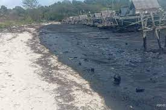
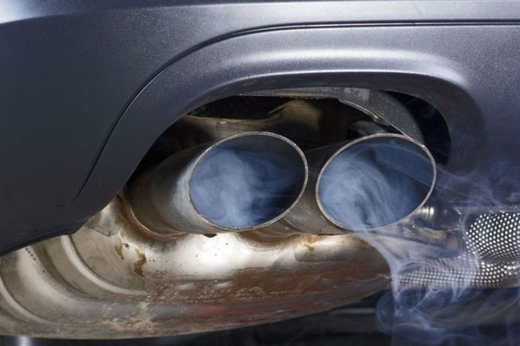

Uji Pemahaman
Bagian B
1. Jawablah apakah pernyataan tersebut benar atau tidak, kemudian jelaskan alasannya. “Pertumbuhan lumut kerak dapat digunakan sebagai indikator terjadinya pencemaran udara sebab lumut kerak mempunyai toleransi yang tinggi terhadap pencemaran udara”
2. Perhatikan gambar berikut!
Jelaskan dampak negatif dari penggunaan produk tersebut dan kemukakan pendapat terkait solusi permasalahan tersebut!
3. Awal Maret 2022, limbah minyak dibuang oleh kapal asing di pesisir Bintan. Limbah yang dibuang merupakan sludge
oil yakni endapan minyak bumi berbentuk logam berat. Limbah tersebut dibuang oleh pemilik kapal internasional di
wilayah selat Singapura.

Berdasarkan kasus tersebut apa yang dapat dilakukan masyarakat dalam mengurangi dampak dari limbah minyak yang
dibuang, serta bagaimana tindakan yang sebaiknya pemerintah lakukan terkait peristiwa tersebut? Jelaskan pendapatmu!
4. Perhatikan gambar berikut, apa yang terjadi apabila komponen alat yang terdapat pada mobil tersebut dilepas?

5. Kemukakan pendapatmu terkait video berikut ini